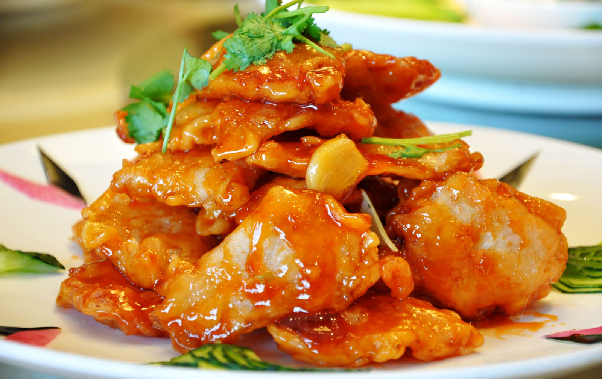

The Specialty of The House

Peking duck: The fruit is roasted on charcoal fire, it is ruddy, the meat is fat but not greasy, and the outside is crispy. Beijing roast duck is divided into several schools, and the roast duck of Beijing roast duck is the representative of the two schools. It is represented by red and tender meat. , The taste is mellow, fat but not greasy, and it has "world delicacy".

Guo Bao Pork: Guo Bao Pork uses pork tenderloin and starch to be fried twice. The meat is deep-fried the first time, and the second time the meat is deep-fried until it's golden in appearance and out of the pan. Finally, top with special sweet and sour sauce. The skin is crispy and the meat inside is very tender.

Kung Pao Chicken: Kung Pao Chicken is cooked with chicken as the main ingredient and supplemented with peanuts, chili, and other auxiliary ingredients; it is red but not spicy, spicy but not strong, spicy, and the meat is smooth and crisp; its entrance is fresh and spicy, and the chicken is fresh and tender. Can match the crispness of peanuts.

Cold Spicy Beef Offal : This dish shows the chef's knives very well. Made with beef heart, tongue, stomach, and beef. The chef slices them into large and thin slices. Beautiful color, tender and delicious, spicy and fragrant, very palatable.

Sweet and Sour Fish: Remove the scales, gills, and internal organs of the fish and wash them with clean water. Cut off the fish head with the pectoral and ventral fins, and then cut the fish head from the lower jaw. Cut the fish head in half and pat it slightly with a knife to remove the fish from both sides, remove the chest spines, and connect the fish tails to the oil pan. Deep-fried until golden brown and topped with sauce as a platter; it is bright in color, tender and crispy, sweet and sour.